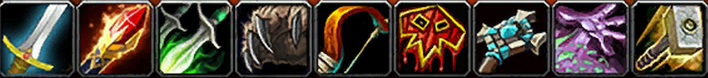
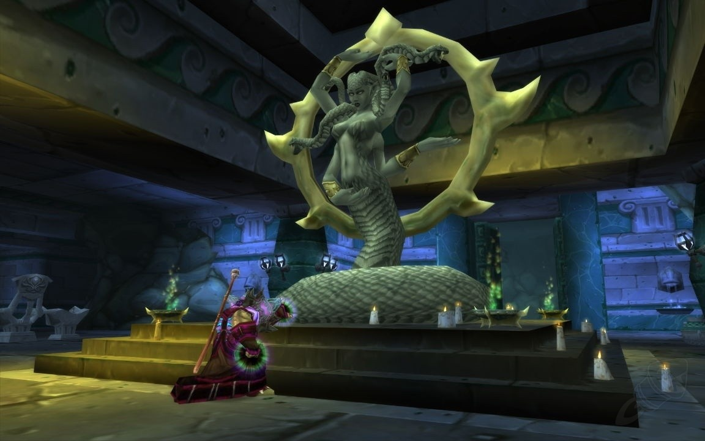
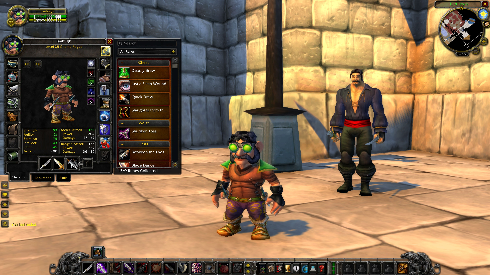

World of Warcraft Executive Producer Holly Longdale took to the BlizzCon 2023 stage to announce a new WoW Classic seasonal experience: Season of Discovery.
In Season of Discovery, players will discover new secrets by scouring Azeroth to find class-altering abilities. Tanking Warlocks, Mage healers, and more will be possible. The Season will launch with an initial level cap of 25, and upon reaching max level, players will be met with a new level-25 endgame! Discover a 10-player Blackfathom Deeps raid with new and reimagined bosses, mechanics, and rewards. Not long after, the level cap will be increased by a few levels, bringing even more endgame content.
All the original classes from the 2004 World of Warcraft release make their return in SoD.
Hint: Click on a class icon to learn more about the class!
Dungeons are re-imagined, with the first massive change coming to Blackfathom Deeps. BFD will be turned into a leveling 10-man raid, with completely redesigned bosses and new items.
The biggest change in SoD comes in the form of Runes. Runes are additional abilities all classes will be able to unlock and add to a specific item slot.
